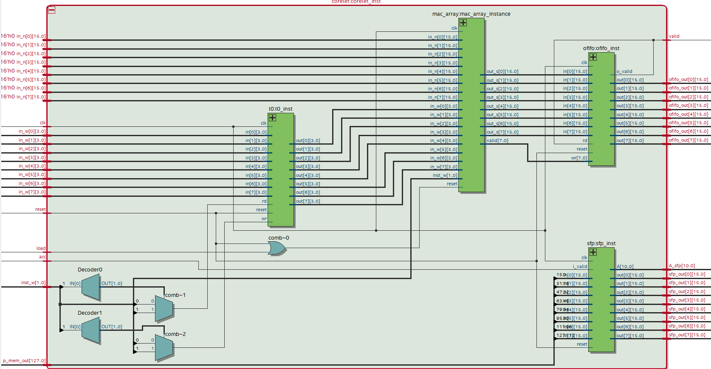
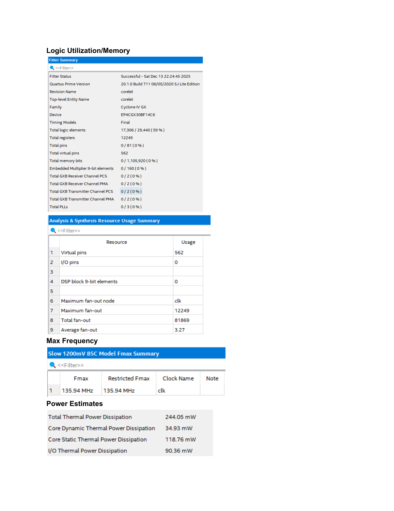

Top-level RTL of the reconfigurable systolic array targeting Cyclone IV GX.
Designed and implemented a reconfigurable 2D systolic array architecture in Verilog for efficient convolutional neural network inference on FPGA. The goal was to minimize power consumption and memory bandwidth while maintaining high throughput for convolutional layers.
The architecture is reconfigurable — parameters can be adjusted to accommodate different network shapes and input sizes without a full redesign. The final design achieved substantial improvements across latency, memory, and compute efficiency metrics over a baseline implementation.

